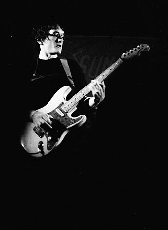
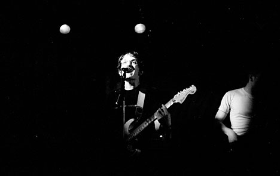
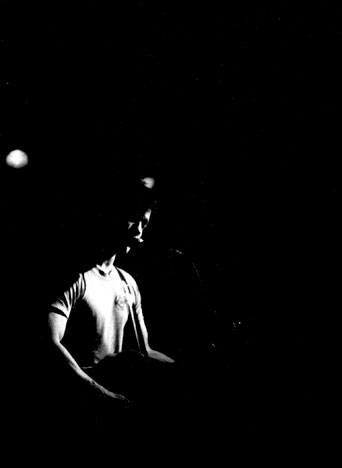

Big Orange Crayonmusical thingsJupiter Sunrise Valentines, Albany, NY April 2nd, 2004 This was a hard show to take pictures at since it was very very crowded, but I took a couple. Pictures: (hold on a sec, they might take a little while to load)    I kinda like this one Camera notes: Fuji Neopan 1600 pushed to 3200, developed in Rodinal (1:100) at 18 degrees for 27 minutes. Please don't use these elsewhere unless you are in one of the bands or are a nice person. |